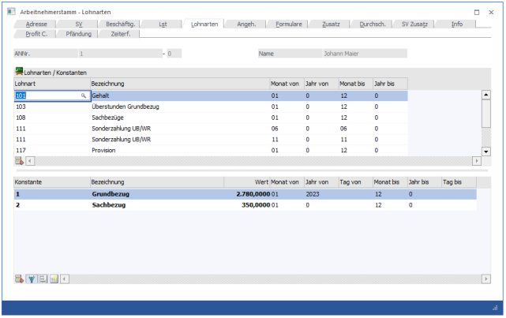

In diesem Fenster, das über den Menüpunkt
1 Stammdaten
1 Arbeitnehmer
1 Arbeitnehmerstamm
oder Schnellaufruf
1 STRG + A
1 Register Arbeitnehmerstamm - Lohnarten
aufgerufen wird, können die Lohnarten, die pro AN standardmäßig verwendet werden sollen, verwaltet werden.

Lohnarten
In dieser Tabelle können die Standard-Lohnarten des AN hinterlegt werden. Dabei stehen folgende Eingabefelder zur Verfügung:
Ø Lohnart
Hier wird die Lohnartennummer eingetragen. Durch Drücken der F9-Taste kann nach allen bereits angelegten Lohnarten gesucht werden.
Ø Bezeichnung
In diesem Feld wird die Lohnartenbezeichnung angezeigt. Dieses Feld kann nicht verändert werden.
Ø Monat von
Aus der Auswahllistbox kann das Monat gewählt werden, ab dem diese Lohnart ihre Gültigkeit hat (z.B. wenn ein Sachbezug erst ab Mai gezahlt wird).
Ø Jahr von
Hier wird das Jahr eingetragen, in dem die Lohnart gültig ist. Standardmäßig wird immer 0 vorgeschlagen. Das bedeutet, dass die Lohnart immer verwendet wird. Soll die Lohnart nur beschränkt verwendet werden, kann hier die Jahreszahl eingetragen werden.
Ø Monat bis
Aus der Auswahllistbox kann das Monat gewählt werden, bis zu dem diese Lohnart ihre Gültigkeit hat (z.B. wenn ein Bezug nur bis August bezahlt wird).
Ø Jahr bis
Hier wird das Jahr eingetragen, in dem die Lohnart gültig ist. Standardmäßig wird immer 0 vorgeschlagen. Das bedeutet, dass die Lohnart immer verwendet wird. Soll die Lohnart nur beschränkt verwendet werden, kann hier die Jahreszahl eingetragen werden.
Ø 
Durch Anklicken des Entfernen-Buttons wird die gerade aktive Lohnart gelöscht.
Beispiele für die Hinterlegung von Lohnarten:
Ø Grundbezüge
Bei Standardbezügen wie Gehalt oder Stundenlohn, die das ganze Jahr über Gültigkeit haben, wird bei von/bis 01 bis 12 hinterlegt.
Ø Sonderzahlungen
Sonderzahlungen werden nur 2 Mal im Jahr bezahlt. Daher wird einmal die Gültigkeit 05 bis 05 und einmal die Gültigkeit 11 bis 11 eingetragen - d.h. es kann auch vorkommen, dass eine Lohnart öfters eingetragen wird.
Achtung:
Bei der Verwendung von automatischen Lohnarten und Folgelohnarten (siehe auch Kapitel Lohnartenstamm) muss darauf geachtet werden, dass bei der Einzelerfassung nicht nur die automatische Lohnart sondern auch die Folgelohnart berücksichtigt wird - d.h. unter Umständen kann eine Lohnart öfters vorgeschlagen werden.
Konstantenvorschlag
Wird eine Lohnart hinterlegt, wird im Hintergrund geprüft, ob sich in der zugehörigen Lohnformel ANKonstanten befinden. Ist dies der Fall, werden diese Konstanten in der Tabelle "Konstanten" vorgeschlagen, wenn diese Konstante noch nicht hinterlegt wurde.
Konstanten
In dieser Tabelle können Konstanten verwalten werden, die für die automatische Berechnung von Lohnarten verwendet werden können. Dies kann z.B. der monatliche Grundbezug, ein Sachbezug oder dergleichen sein. Die aktuell gültigen Konstanten werden fett dargestellt, sodass man sie leichter erkennen kann.
Die Anlage der Konstanten selbst erfolgt über den Menüpunkt
1 Stammdaten
1 Mandantenstammdaten
1 Konstantenstamm
Eingabefelder
Ø Konstante
Hier wird die Konstantennummer eingetragen. Durch Drücken der F9-Taste kann nach allen angelegten Konstanten gesucht werden. Eine Konstante kann auch öfters vergeben werden (um z.B. unterjährige Bezugserhöhungen abzubilden).
Ø Bezeichnung
Hier wird die Bezeichnung der Konstante angezeigt.
Ø Wert
In diesem Feld wird der Betrag eingegeben, mit der die Konstante abgerechnet werden soll, wobei der Wert bis zu 4 Nachkommastellen haben kann. Abhängig von der Formel, die mit dieser Konstante rechnet, wird dieser Wert weiterbehandelt.
Ø Monat von
Aus der Auswahllistbox kann das Monat gewählt werden, ab dem diese Konstante ihre Gültigkeit hat (z.B. wenn eine Bezugserhöhung erst ab Mai gilt wird).
Ø Jahr von
Hier wird das Jahr eingetragen, in dem die Konstante gültig ist. Standardmäßig wird immer 0 vorgeschlagen. Das bedeutet, dass die Konstante immer verwendet wird. Soll die Konstante nur beschränkt verwendet werden, kann hier die Jahreszahl eingetragen werden.
Ø Tag von
Hier wird der Tag eingetragen, ab dem die Konstante gültig ist. Dies ist dann notwendig, wenn der Konstantenwert sich innerhalb des Monats ändert (zum Beispiel Wechsel des Lehrjahres).
Ø Monat bis
Aus der Auswahllistbox kann das Monat gewählt werden, bis zu dem diese Konstante ihre Gültigkeit hat (z.B. wenn ein Bezug nur bis August bezahlt wird).
Ø Jahr bis
Hier wird das Jahr eingetragen, in dem die Konstante gültig ist. Standardmäßig wird immer 0 vorgeschlagen. Das bedeutet, dass die Konstante immer verwendet wird. Soll die Konstante nur beschränkt verwendet werden, kann hier die Jahreszahl eingetragen werden.
Ø Tag bis
Hier wird der Tag eingetragen, bis zu dem die Konstante gültig ist. Dies ist dann notwendig, wenn der Konstantenwert sich innerhalb des Monats ändert (zum Beispiel Wechsel des Lehrjahres).
Ø
Durch Anklicken des Entfernen-Buttons wird die gerade aktive Konstante mit allen ihren Werten gelöscht.
Ø Aktuell gültige Konstanten anzeigen - Button
Standardmäßig werden immer alle gültigen Konstanten angezeigt. Wenn eine Historie der Bezüge mitgeführt wird, können das mitunter sehr viele Einträge sein. Durch Anklicken dieses Buttons werden nur die Konstanten angezeigt, die aktuell (bezogen auf das aktuelle Abrechnungsmonat) gültig sind. Damit wird die Ansicht der Konstanten übersichtlicher. Wird der Button einmal aktiviert, bleibt diese Einstellung erhalten, bis das Fenster geschlossen wird.
Hinweis
Es kann auch vorkommen, dass eine Konstante öfters eingetragen wird, z.B. wenn ein Bezug bis März 3.000,- und ab April dann 3.500,- beträgt.
Ø Konstanten ohne Wert anzeigen
Ist dieser Button aktiviert, so werden auch jene Konstanten in der Tabelle angezeigt, die den Wert 0,00 hinterlegt haben.
Ø Konstantenwartung
Dieser Button kann gedrückt werden, wenn der Fokus auf einer aktiven Konstantenzeile gesetzt ist. Dadurch wird die Konstantenwartung geöffnet und ein neuer Wert einer Konstante kann berechnet werden. Zusätzlich werden sämtliche Zeitraumbegrenzungen gesetzt.